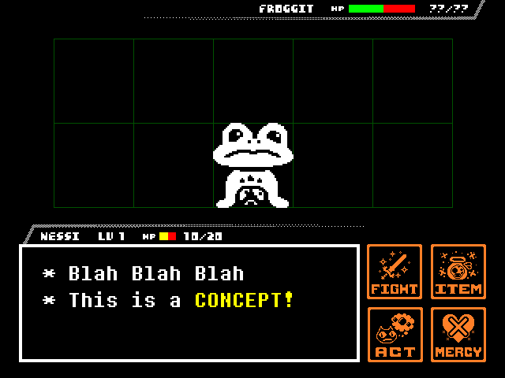

NEWSLETTERS
2025 Summer Devlog
2025-07-02 | By Dee and sushiwt
Hello, and welcome to our first seasonal devlog (yay)! This is the first of many newsletters we will make each season to show you all the progress we've made for the game.
“What’s new?” You ask? Well we’ll tell you what’s new!:
- Introduction sequence has progressed!
- Nessi has over a hundred sprites now, somehow???
- New Mipsqueek sprites!
..and more, coming up!
But first,here are some BIG SHOT Announcements!
If it isn't obvious enough, we have a website! (← this is a hyperlink…) Here you will find links to the current build of the game (Which, at this point, there is no build, but we digress…), social media links, our credits, and our newsletters - where they’ll be from this point forward, if you’d ever want to look into them!
Also, we now have a DISCORD SERVER! PLEASE JOIN IT!
https://discord.gg/SxhH8sPDgA (Click the link...)
you will get a very cool server tag ooooo
Now, let’s start talking about what we have in terms of the current build of the game!
DEVELOPMENT
For the past few months, we mostly focused on the Introduction. It is taking quite a while because we have a different spin on the usual introduction sequence, but it’s 90% done!
Although we can’t show said spin yet, we would like to showcase the work our team has made for it!
- MUSIC -
For this part of the game, we only really needed one piece of music; a rendition of Once Upon A Time. So we gave Chiiz, one of our composers, the task to make it, and here's what they came up with:
This is a draft of the introduction music, made by Chiiz. Even though the original Once Upon A Time sounded chiptune-y already, they (in my opinion) made it even MORE like something you'd hear on an NES. Since it's a draft though, this version will not be in the actual game.
- ART -
For the Art in the Introduction, we asked Hawkow to draw sketches of what it should look like, and they gave us this:
I (sushiwt) wanted to lean more into Nessi’s imagination, so when I gave Hawkow the concepts for them to derive on, the humans had Nessi’s hairstyle and the monsters had Mipsqueek’s look.
…and that’s basically it for the introduction! (that we want to show off..at least..)
Now, onto the rest of the stuff we have finished!
- SPRITES -
Nessi has a spritesheet that consists of around 350 sprites (Give or take, to account for repeated sprites), created by Pikmin_Drawn (Dee). What we will say is that Nessi has different sprites for different outfits and routes.
[INSERT NESSI SPRITESHEET]No, you cannot get a view of the current spritesheet because that would be leaking our plans!
We also have brand new, cuter Mipsqueek sprites created by Dee and gruntlos! Their eyes are now beadier than before… We decided that a change was necessary, because we felt that the previous sprites for Mipsqueek didn’t really reflect their look in our artworks for the game.
- PROGRAMMING -
For the coding side of things, we finally got a Dialogue System + NPC Interaction System that works..most of the time...(created by sushiwt)! The system uses a Godot Engine plugin called Dialogue Manager to do things like interact and talk to people, move characters around, and use items from the inventory.
Speaking of the inventory, we also have a functioning version of the ITEM Menu (also created by sushiwt)! This system entirely relies on the dialogue system though…
- CONCEPT ART -
Last but not least, we have the Battle UI. The last time we showed our Battle UI concept, it looked like this:
But now, it looks like THIS!!!
To add to the Nintendo-ness of this UI, Dee crafted big and Nintendo-like buttons that each correlate to their respective Nintendo game (FIGHT being Link’s sword from The Legend Of Zelda, ITEM being a bag of the Mushroom from Super Mario*, and ACT being one of the reaction icons from Animal Crossing). The UI Layout (created by sushiwt) is also reorganized to loosely resemble the Battle UI of Pokémon, with UNDERTALE elements like the monster grid and the HP/LV bars kept intact.
*The mushroom sprite (not the bag) was actually created by Gazey, from the battle icons that were made way before Dee redesigned them to be bigger…
CONCLUSION
Thank you all so much for waiting on us to work on this game, we are trying our hardest to make a free product that both fits UNDERTALE’s canonical narrative while also being its own spin on Toby’s RPG “freedom of choice” system. We assure you all that unless we say otherwise, UNDERTALE SWITCHED will become a reality. Please stay tuned for any future updates and game builds, which you can do in our WEBSITE and DISCORD.
Of course, we also have to be wary of any legal troubles we as a fangame team may get into because we may be using things from UNDERTALE and DELTARUNE. We are by no means claiming to be an official prequel to UNDERTALE, in fact, we acknowledge that there may never have been a SWITCH SOUL HUMAN in Toby’s world(s), or what being one would actually be like canonically. UNDERTALE SWITCHED is a fan interpretation and will be so unless we are somehow given the blessing from above or something similar.
There is NO CANONICAL SWITCH SOUL HUMAN. Nessi is OUR SWITCH SOUL HUMAN, but there are plenty of other fan interpretations as to what they could be. If you like Nessi and see them as the more appropriate SWITCH SOUL HUMAN, then by all means, you may see them as such, but please, PLEASE remember that they are not canonical despite our attempts to remain as close to UNDERTALE’s canon as we can. We are making this game for fellow fans, to give you all a product that you all can enjoy without even having to spend a penny! We love you all, and we hope that you can enjoy our UNDERTALE SWITCHED when we finally release it in full.
CREDITS
- Toby Fox and the UNDERTALE & DELTARUNE teams respectively
We would not be here without you, Toby. Please keep doing what you’re doing, as we all look up to you with love and traits in our very own SOULs. Everyone’s work on UNDERTALE & DELTARUNE is superb and unmatched. Thank you.
- skittleskitsu
The Original creator of UNDERTALE SWITCHED. Thank you, Rose, for starting this project up. For our audience, we would like to point you to UNDERTALE YELLOW Ⅱ, another fangame, but of a fangame!??? Whoever heard of such a thing?
- sushiwt
The Director of UNDERTALE SWITCHED. Wrote the ideas for the newsletter alongside writing. They mean a lot to the project alongside numerous people working on it. As UNDERTALE SWITCHED’s main coder, they make the game as well.
- Dee (Pikmin_Drawn)
The Co-Director of UNDERTALE SWITCHED. Helped write the newsletter alongside polishing up certain areas. The backbone of UNDERTALE SWITCHED as sushiwt would say himself. They also wrote the entire conclusion and credits of this newsletter, except this sentence, because I (sushiwt) made it.
- The Entire UNDERTALE SWITCHED team!
- The EX UNDERTALE SWITCHED team! (Who deserves credit)
- QueenOWorld
- Esare
- Melmalelma
And lastly… You. Thank you for supporting UNDERTALE SWITCHED. We may have a huge journey ahead of us, but we cannot stress enough how important each and every single one of you are to this project. We want to take this moment to appreciate our own fans, no matter how small or big in number they are. We also want to take the moment to thank the greater UNDERTALE and DELTARUNE communities.
All of you have a light down within, and it shines with your own senses of determination. No matter how dark each and every one of your lives may get, please remember that you all are important, so please let all of your lights shine. All of us are bright as long as we help each other and we will remain bright as long as we love and care for each other. We ask that you all never stop being who each and every single one of you are.
This project was born of strong emotion and strong heart, so from the bottom of said hearts…
…thank you.
Thank you all so very, very much.
- switchdevs (The UNDERTALE SWITCHED Development Team)
We’ll see you all…
…very, very soon.
Good night.